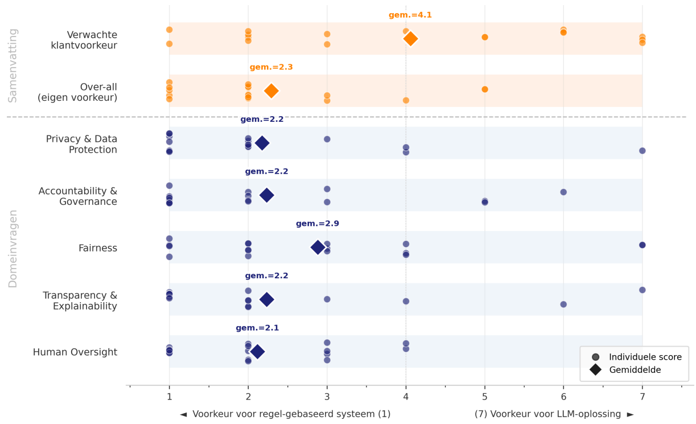

Responsible use of AI
I was invited by Strategy Alliance, an a digital transformation consultancy organisation, to come give a talk on the responsible use of AI. In my talk, I touched on 5 important areas of responsible AI: Privacy & Data Protection, Accountability & Governance, Fairness, Transparency & Explainability, and Human Oversight.
Near the end of the session, we discussed a concrete use case, both with and without the application of AI. Everyone rated their preference of the discussed areas as well as their over-all preference for either solution. As a result of this session, I wrote a White Paper together with Bas van Gils, their managing partner.
If you attended the talk, thank you for your participation. I hope you learned something. The White Paper can be downloaded below.
Some results
A package delivery companty wants to incorporate a chatbot into their website such that they can more efficiently help customers. Those who cannot be helped by this chatbot will be passed along to the current phone line to talk to a human. The company is unsure if they should apply a rule-based system or a LLM.
A rule-based system would be less adept at handling dynamic user inputs (e.g., only being able to perform complex keyword matching). It could also only provide pre-defined answers. However, this does guarantee these answers are always correct.
An LLM would instead be much more capable of dealing with dynamic user inputs. It could also suit its answers directly to questions. However, the company would not be able to guarantee the answers are always correct.
First, participants were asked to rate their preference for either system on a scale of 1-7. They were then also asked as to the preferences they imagined the customers would express. Then, each participant was asked to provide their preference with respect to each of the five discussed areas. The results are depicted in the figure below. The rest of the White Paper can be downloaded here.
